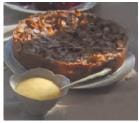

Apple Bavarian Torte (★★★★)
A dassic European torte baked in a springform pan. Cream cheese, sliced almonds, and apples make this the perfect holiday treat (12 servings).
INGREDIENTS
- ½ cup butter
- ½ cup white sugar
- ¼ teaspoon vanilla extract
- 1 cup all-purpose flour
- 1 (8 ounce) package cream cheese
- ¼ cup white sugar
- 1 egg
- ½ teaspoon vanilla extract
- 6 apples peeled, cored, and sliced
- ½ cup white sugar
- ½ teaspoon ground cinnamon
- ¼ cup sliced almonds
DIRECTIONS
- Preheat oven to 450° F (230° C).
- Cream together butter, sugar, vanilla, and flour.
- Press crust mixture into the flat bottom of a 9-inch springform pan. Set aside.
- In a medium bowl, blend cream cheese and sugar. Beat in egg and vanilla. Pour cheese mixture over crust.
- Toss apples with sugar and cinnamon. Spread apple mixture over all.
- Bake for 10 minutes. Reduce heat to 400° F (200° C) and continue baking for 25 minutes.
- Sprinkle almonds over top of torte. Continue baking until lightly browned. Cool before removing from pan.
REVIEWS
- ★★★★
- I loved the buttawy lasts of the cast which complements the apples very nicely.
- - Reviewed on Sep. 22, 2014 by MMASON.
- ★★
- Nothing special, I like the crust, but there was a little tao much of it for my taste, and I liked the filing but there was too little of it. I thought the crunchy apples combined with the sliced almomds detracted from the overall flavor.
- - Reviewed on Sep 1, 2014 by GLENDACHEF.
- ★★★★★
- Delicious! I recommend microwaving the apples for 3 minutes before baking, to soften them, Great dessert.
- - I'm be making it again for the holidays.
- - Reviewed on August 28, 2014 by BBABS.